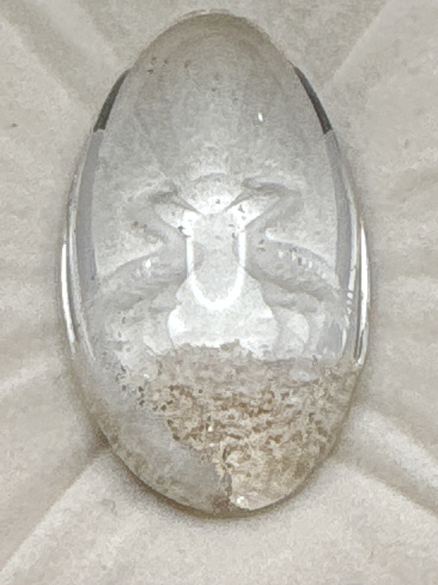

The Gem Drawer › No. 12

An oval cabochon carved with a leaping hare; the box label never names the material.
| Catalogue no. | #12 |
|---|---|
| As labeled | UNIDENTIFIED - carved clear stone intaglio (see notes; material/species not stated anywhere on label) |
| Shape / cut | Oval cabochon with engraved/carved intaglio design (appears to depict a leaping rabbit or hare) |
| Weight | Not recorded |
| Measurements | Not recorded |
| Colour | Clear / colorless with brownish surface staining or inclusion on part of the stone |
| Clarity / condition | Not recorded |
Interested in this stone, or in the collection as a whole? Terry VanWormer can answer questions about it.
Click here to inquireor email Terry directly at maxrebo34@gmail.com